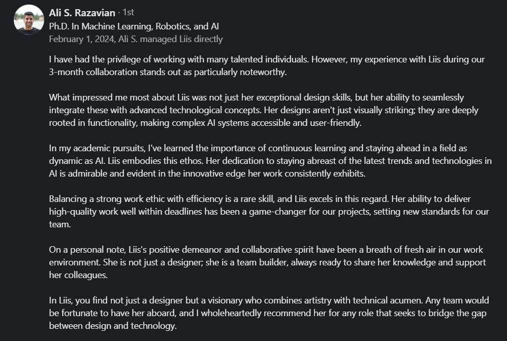

StaChesstics' mission revolves around using the AI model developed by its co-founders, merging their passion for chess. StaChesstics AI has proven to provide more accurate predictions for chess tournaments than other chess prediction models.
In October 2023, I began my internship as a Frontend Developer at StaChesstics. Joining a relatively new project, I had the exciting opportunity to redesign the website, logo, and overall graphical profile. Working closely with StaChesstics' backend developer, we developed and refined the frontend using mainly Scala and Laminar, ensuring a user-friendly and interactive experience.
My time at StaChesstics has been both rewarding and educational. The support and encouragement from my co-workers have been invaluable as I delved into learning new programming practices and techniques. Additionally, I've gained hands-on experience in making AI user-friendly.
StaChesstics' mission revolves around using the AI model developed by its co-founders, merging their passion for chess. StaChesstics AI has proven to provide more accurate predictions for chess tournaments than other chess prediction models.
Beyond website development, my role extended to managing social media posts for StaChesstics socials (Twitter, Instagram) during tournaments. I've been part of two bigger tournaments: European Team Chess Championship 2023 and the Tata Steel Chess Tournament 2024.
Feedback from my supervisor at StaChesstics, with whom I collaborated closely, focusing on how to enhance the visual representation and user-friendliness of the AI processes.
Together with Ali, I also worked on a homepage site, Exoneuron, for the AI model.
